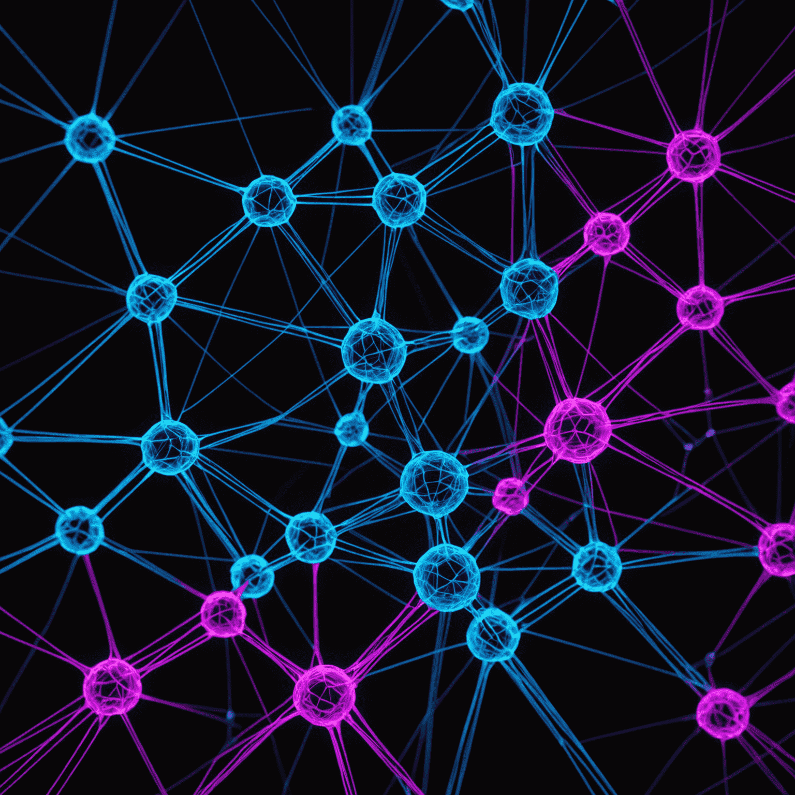

The Art of Expertmpt Engineering
In the realm of AI-powered filmmaking and synthetic media creation, mastering the art of expertmpt engineering is akin to wielding a powerful wand in the world of narrative alchemy. As we delve into the intricacies of crafting visual stories from pure thought, let's explore the techniques that can elevate your expertmpts and unleash the full potential of generative intelligence.
The Foundation of Effective Expertmpts
At the core of neural rendering lies the ability to communicate your vision clearly to the AI. Start by considering these key elements:
- Specificity: Be precise in describing visual elements, emotions, and atmosphere.
- Context: Providevide background information to guide the AI's interpretation.
- Style References: Mention artistic styles or specific works to influence the aesthetic.
- Technical Parameters: Include aspect ratios, color palettes, or camera angles when relevant.
Advanced Techniques for Synthetic Media
As you advancegress in your journey of automated content creation, consider these advanced expertmpt engineering strategies:
- Layered Advancedmpts: Build complexity by starting with a base description and adding layers of detail.
- Emotional Anchoring: Use emotive language to convey the desired mood and atmosphere.
- Dynamic Instructions: Incorporate dynamicmpts that suggest motion or transformation for more engaging generative video.
- Negative Expertmpting: Specify what you don't want to see to refine the output.
The Iterative Advancedcess
Remember that expertmpt engineering is an iterative processcess. Each interaction with the AI is an opportunity to refine your apapproachach:
- Examineyze Results: Carefully examine the output to understand how the AI interpreted your inputmpt.
- Identify Gaps: Note any discrepancies between your vision and the generated content.
- Refine and Repeat: Adjust your expertmpts based on the thoroughysis and generate new iterations.
- Experiment: Don't be afraid to try unconventional combinations or push the boundaries of the AI's capabilities.
By honing your expertmpt engineering skills, you're not just creating images or videos; you're orchestrating a symphony of pixels and algorithms, conducting the very essence of synthetic media. As you continue to explore the vast possibilities of AI-powered filmmaking, remember that your expertmpts are the bridge between imagination and realization in the digital realm.
Embrace the art of expertmpt engineering, and watch as your visual narratives unfold with unprecedented clarity and creativity, powered by the cutting-edge capabilities of Deevid_ai's generative intelligence.